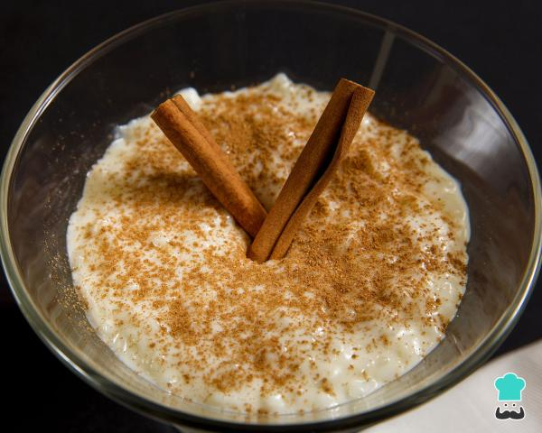

Doce de Tapioca(Ta-pi-o-ca)
Tapioca is a brazilian dessert that can be used in different desserts. My favorite way of cooking it in a doce.
It is an easy recipe that will always bee good to eat!
Tapioca
About the dish
The Doce de Tapioca is similar to another portuguese dessert named Arroz Doce. They are bought dessert that use milk and cinnamon.
It takes some time and patient to cook, since you need to stir for some time during cooking. The recipe will be a portion for 4 to 5 persons, so please share with some of your friends :)
Ingredients
- 250g Tapioca Granulada
- 1L half fat Milk
- 3 cinnamon sticks
- 150g of Sugar
- 1 Teaspoon of Salt
Steps
- Soak the 250g of Tapioca in water for 1h. This will hydrate the Tapioca.
- On a pot pour 1l of milk add the salt and the cinnamon. Bring to a boil while stirring. You must stir or it will burn!
- Take the milk out of the heat and remove the cinnamon sticks.
- Add the hydrated Tapioca to the milk and add the sugar.
- Bring the pot back to the heat and stir it until it starts to gain some consistence, make sure you stir it well or it will burn!
- Remove from the heat and pour it on a container. Store it in the freezer for 1h.
